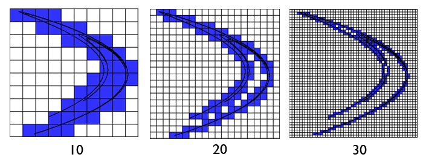
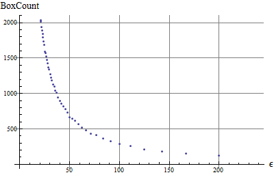

wxChaos tools
Fractal Dimension
A friendly way to ask how much space a shape really occupies.
The dimension calculator estimates box-counting dimension, also called Minkowski-Bouligand dimension. It is useful when a shape is too wrinkled, branching, or self-similar to be described well as only a line, an area, or a volume.
Why fractals can have non-integer dimensions
Ordinary geometry has clean categories: a line is one-dimensional, a filled square or disk is two-dimensional, and a cube is three-dimensional. Fractals often live between those categories. They may be made of curves, yet fold, branch, and repeat so much detail that they occupy space faster than a smooth curve but not as completely as a filled surface.
A circle's outline has dimension 1 because doubling the measurement resolution roughly doubles the number of small ruler pieces needed to cover it. A filled square has dimension 2 because halving the box size makes the number of required boxes grow about four times. A fractal boundary can grow by an in-between factor, and that in-between growth is what fractal dimension tries to measure.
The box-counting idea
Imagine placing a grid of square boxes over the fractal. Count how many boxes touch the set. Then use a finer grid and count again. If the box size is \(\varepsilon\), let \(N(\varepsilon)\) be the number of boxes that contain part of the set.
The dimension is estimated from how quickly \(N(\varepsilon)\) grows as \(\varepsilon\) becomes smaller. Fast growth means the set fills space more densely. Slow growth means it behaves more like a simple curve or a sparse collection of points.

In practice wxChaos cannot take the limit all the way to zero. It renders the fractal at a finite resolution, tries several grid sizes, and estimates the slope of the log-log relationship.
What the plot means

The calculator compares several values of \(\varepsilon\). For each one it counts occupied boxes, then fits the trend between scale and count. A value near 1 means the visible set behaves like a curve. A value near 2 means it fills the image area more like a surface. Many fractals land somewhere between those values.
Treat the result as an estimate, not a perfect identity. It depends on render size, chosen viewport, iteration count, the box sizes you ask it to test, and how much detail is visible at that resolution.
Using the DimensionFrame in wxChaos
Choose a fractal and region
Select the fractal, then set the real and imaginary bounds for the square area you want to measure. The preview shows the region that will be rendered.
Set render detail
Pick the image size and iteration count. Higher values can reveal more structure, but they take longer to render and count.
Choose box divisions
Use the function tab to generate box divisions, or enter a list manually. These divisions decide which box sizes are tested.
Calculate and read the result
Press Calculate. wxChaos renders the set map, counts occupied boxes for each selected scale, logs progress, and reports an estimated box-counting dimension. If the value is 1.45, for example, the visible set is more space-filling than a smooth curve but still far from filling the whole square region.